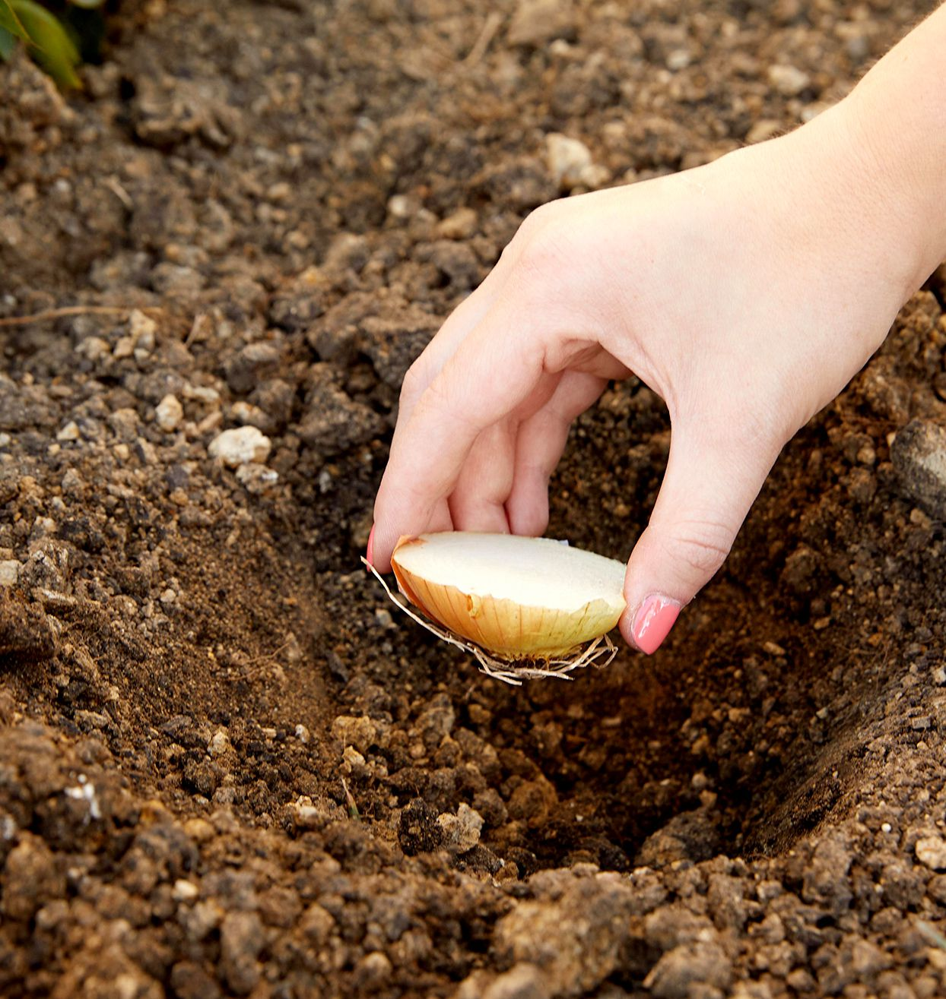

Benefits of regrowing veggies

- It is important to regrow veggies due the positive impact on the climate change.
- It is very cheap compared to the expenses of the vegetables at the current moment.
- It is also environmentally friendly due to you recycle your old scraps and wastes.
Banana Peel fertilization

- It is important to regrow veggies due the positive impact on the climate change.
- It is very cheap compared to the expenses of the vegetables at the current moment.
- It is also environmentally friendly due to you recycle your old scraps and wastes.